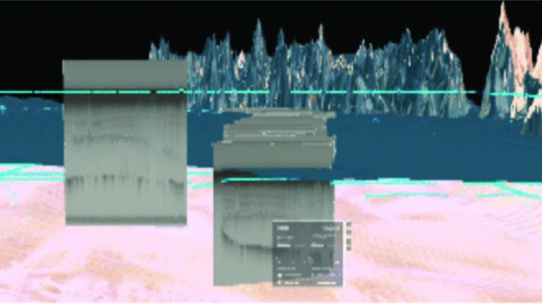
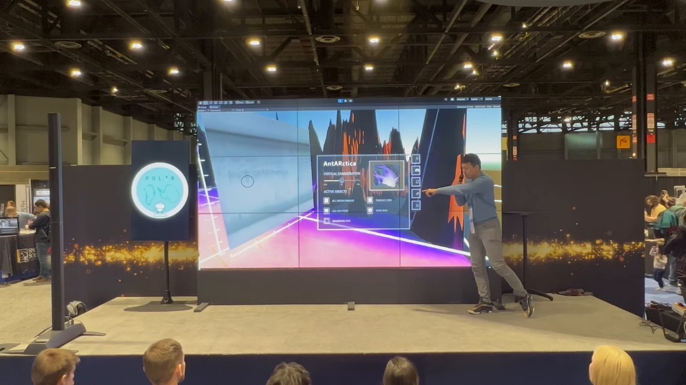

Augmented Reality and Virtual Reality for Ice-Sheet Data Analysis
IEEE International Geoscience and Remote Sensing Symposium, 2023.

Abstract
Three-dimensional geospatial thinking is an important skillset used by earth scientists and students to analyze and interpret data [1]. This method of inquiry is useful in glaciology, where traditional geophysical survey techniques have been adapted to map three-dimensional (3D) ice sheet structures and inform studies of ice flow, mass change, and history in both Greenland and Antarctica. Ice-penetrating radar images the ice in two-dimensional (2D) cross-sections from the surface to the base. Analysis of this data often requires visual inspection and 3D interpretation, but is hindered by data visualization tools and techniques that rarely transcend the two-dimensionality of the computer screen [2]. Recent advances in Augmented Reality (AR) and Virtual Reality (VR), together referred to as Extended Reality (XR), offer a glimpse into the future of 3D ice-sheet data analysis [3]. These technologies offer users an immersive experience where 3D geospatial datasets can be understood more immediately than with 2D maps, and gestural user interfaces can enhance understanding. Here we present Pol-XR, an XR application that supports both visualization and interpretation of ice-penetrating radar in Antarctica and Greenland.
Video

Cite
A. Boghosian, S. I. Cordero, C. Elvezio, S. Sanchez-Zarate, B. Yang, S. Guo, Q. Ashikin, J. Salzman, K. Tinto, S. Feiner, and R. Bell, “Augmented Reality and Virtual Reality for Ice-Sheet Data Analysis,” in Proc. IEEE International Geoscience and Remote Sensing Symposium, 2023, pp. 52–55, doi: 10.1109/IGARSS52108.2023.10283077.
@inproceedings{boghosian2023icesheet,
title={Augmented Reality and Virtual Reality for Ice-Sheet Data Analysis},
author={Boghosian, Alexandra and Cordero, S. Isabel and Elvezio, Carmine and Sanchez-Zarate, Sofia and Yang, Ben and Guo, Shengyue and Ashikin, Qazi and Salzman, Joel and Tinto, Kirsty and Feiner, Steven and Bell, Robin},
booktitle={IGARSS 2023 - 2023 IEEE International Geoscience and Remote Sensing Symposium},
pages={52--55},
year={2023},
doi={10.1109/IGARSS52108.2023.10283077}
}